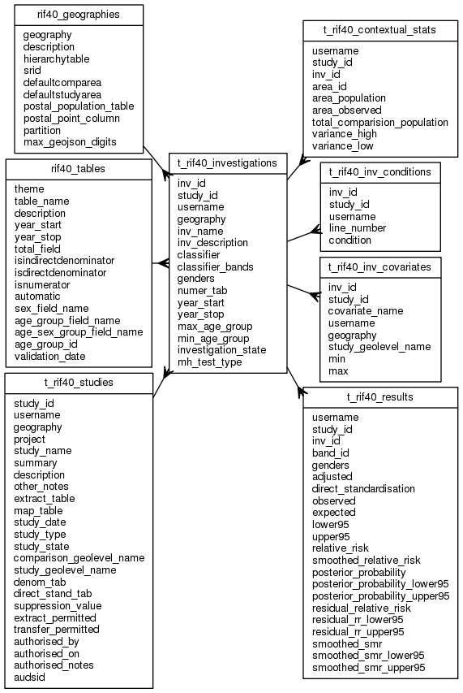

| Table: rif40.t_rif40_investigations | |||
| Details of each investigation in a study | |||
| Size: medium, Select frequency: medium, Update frequency: medium | |||
| Columns | |||
| Name | Type | Constraints | Description |
| inv_id | INTEGER | NOT NULL | Unique investigation index: inv_id. Created by SEQUENCE rif40_inv_id_seq |
| study_id | INTEGER | NOT NULL | Unique study index: study_id. Created by SEQUENCE rif40_study_id_seq |
| username | VARCHAR (90) | Username | |
| geography | VARCHAR (30) | NOT NULL | Geography (e.g EW2001) |
| inv_name | VARCHAR (20) | NOT NULL | Name of investigation. Must be a valid database column name, i.e. only contain A-Z0-9_ and start with a letter. |
| inv_description | VARCHAR (250) | NOT NULL | Description of investigation |
| classifier | VARCHAR (30) | Maps classifier. EQUAL_INTERVAL: each classifier band represents the same sized range and intervals change based on max an min, JENKS: Jenks natural breaks, QUANTILE: equiheight (even number) distribution, STANDARD_DEVIATION, UNIQUE_INTERVAL: a version of EQUAL_INTERVAL that takes into account unique values, | |
| classifier_bands | SMALLINT | Map classifier bands; default 5. Must be between 2 and 20 | |
| genders | SMALLINT | NOT NULL | Genders to be investigated: 1 - males, 2 female or 3 - both |
| numer_tab | VARCHAR (30) | NOT NULL | Numerator table name. May be "DUMMY" if extract created outside of the RIF. |
| year_start | SMALLINT | NOT NULL | Year investigation is to start. Must be between the limnits specified in the numerator and denominator tables |
| year_stop | SMALLINT | NOT NULL | Year investigation is to stop |
| max_age_group | INTEGER | NOT NULL | Maximum age group (LOW_AGE to HIGH_AGE) in RIF40_AGE_GROUPS. OFFSET must be > MIN_AGE_GROUP OFFSET, and a valid AGE_GROUP_ID in RIF40_AGE_GROUP_NAMES.AGE_GROUP_NAME |
| min_age_group | INTEGER | NOT NULL | Minimum age group (LOW_AGE to HIGH_AGE) in RIF40_AGE_GROUPS. OFFSET must be < MAX_AGE_GROUP OFFSET, and a valid AGE_GROUP_ID in RIF40_AGE_GROUP_NAMES.AGE_GROUP_NAME |
| investigation_state | VARCHAR (1) | Investigation state - C: created, not verfied; V: verified, but no other work done; E - extracted imported or created, but no results or maps created; R: results computed; U: upgraded record from V3.1 RIF (has an indeterminate state; probably R. | |
| mh_test_type | VARCHAR (50) | Mantel-Haenszel test type: "No test", "Comparison Areas", "Unexposed Area". | |
| Primary key | |||
| Name | Columns | Description | |
| t_rif40_investigations_pk | study_id, inv_id | ||
| Foreign keys | |||
| Name | Columns | Referenced table | Description |
| t_rif40_inv_geography_fk | geography | rif40_geographies | |
| t_rif40_inv_numer_tab_fk | numer_tab | rif40_tables | |
| t_rif40_inv_study_id_fk | study_id | t_rif40_studies | |
| Incoming foreign keys | |||
| Name | Columns | Referencing table | Description |
| t_rif40_constats_study_id_fk | study_id, inv_id | t_rif40_contextual_stats | |
| t_rif40_inv_conditions_si_fk | study_id, inv_id | t_rif40_inv_conditions | |
| t_rif40_inv_covariates_si_fk | study_id, inv_id | t_rif40_inv_covariates | |
| t_rif40_results_study_id_fk | study_id, inv_id | t_rif40_results | |
| Grants | |||
| Role | Actions | ||
| rif_manager | select, insert, delete, update | ||
| rif_user | select, insert, delete, update | ||
| rif40 | select, references, insert, delete, update | ||
